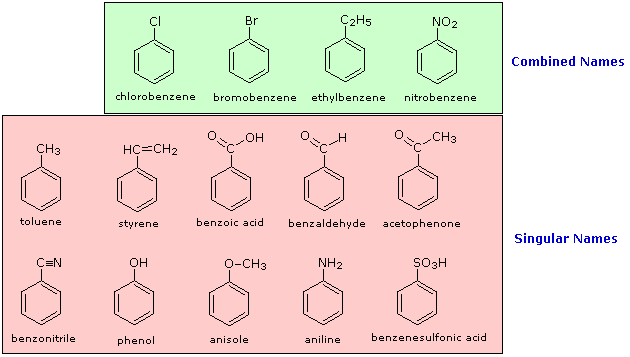
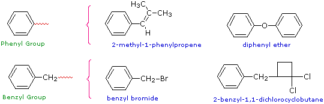
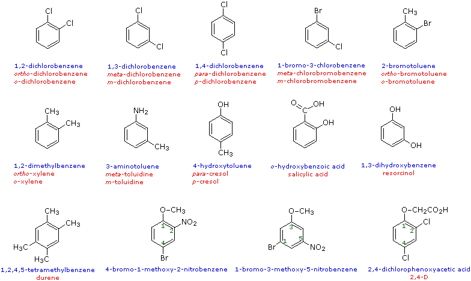

Benzene Derivatives |
|---|
The nomenclature of substituted benzene ring compounds is less systematic than that of the alkanes, alkenes and alkynes. A few mono-substituted compounds are named by using a group name as a prefix to "benzene", as shown by the combined names listed below. A majority of these compounds, however, are referred to by singular names that are unique. There is no simple alternative to memorization in mastering these names.

Two commonly encountered substituent groups that incorporate a benzene ring are phenyl, abbreviated Ph-, and benzyl, abbreviated Bn-. These are shown here with examples of their use. Be careful not to confuse a phenyl (pronounced fenyl) group with the compound phenol (pronounced feenol). A general and useful generic notation that complements the use of R- for an alkyl group is Ar- for an aryl group (any aromatic ring).

When more than one substituent is present on a benzene ring, the relative locations of the substituents must be designated by numbering the ring carbons or by some other notation. In the case of disubstituted benzenes, the prefixes ortho, meta & para are commonly used to indicate a 1,2- or 1,3- or 1,4- relationship respectively. In the following examples, the first row of compounds show this usage in red. Some disubstituted toluenes have singular names (e.g. xylene, cresol & toluidine) and their isomers are normally designated by the ortho, meta or para prefix. A few disubstituted benzenes have singular names given to specific isomers (e.g. salicylic acid & resorcinol). Finally, if there are three or more substituent groups, the ring is numbered in such a way as to assign the substituents the lowest possible numbers, as illustrated by the last row of examples. The substituents are listed alphabetically in the final name. If the substitution is symmetrical (third example from the left) the numbering corresponds to the alphabetical order.
